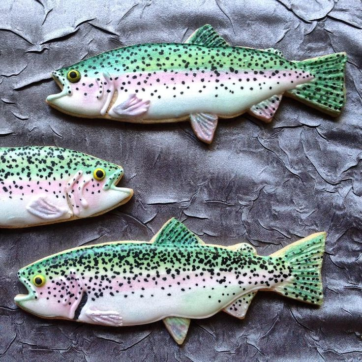

Welcome to Pat's Salmon Cookies! They're cookies made into the shape of a salmon, and actually made with real, organic, grass-fed salmon! What is a more ideal match for a steaming cup of coffee on a gray Seattle morning? Nothing! The locals have begrudgingly fallen in love with them, and they don't love anything. Ever! Pat is certain you will love them too. Please visit one of our boutique artisan bakeries located all around the Greater Seattle Area!